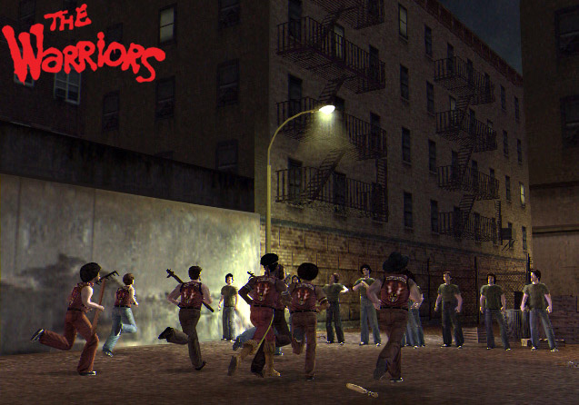
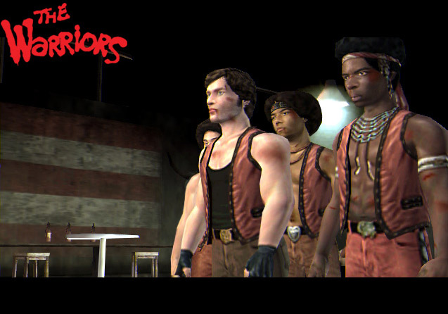
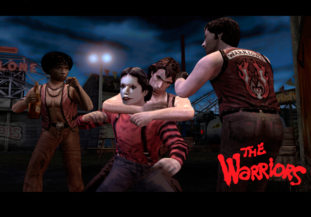
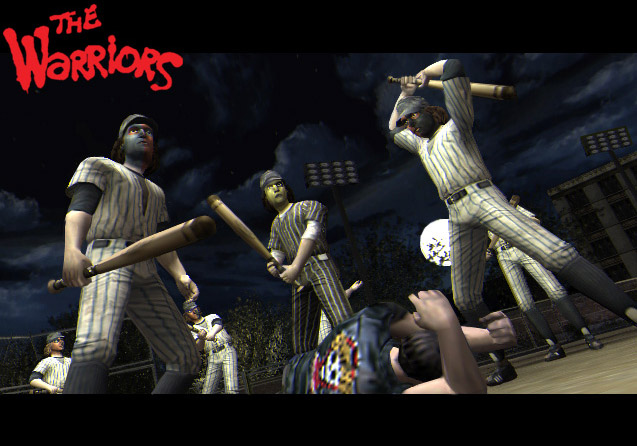

The Warriors

Descripción
The Warriors nos lleva a Nueva York en 1979, donde las calles están controladas por numerosas bandas callejeras. Nuestra aventura comienza cuando los Warriors son acusados injustamente del asesinato de Cyrus, el líder de una de las bandas más poderosas de la ciudad.
A partir de ese momento, tendremos que cruzar Nueva York de punta a punta para regresar a nuestro territorio, mientras cientos de pandilleros intentan acabar con nosotros. Para sobrevivir, tendremos que luchar contra otras bandas, abrirnos paso por las calles y demostrar el verdadero significado de la lealtad.
El juego combina acción y combates callejeros, permitiéndonos controlar a diferentes miembros de los Warriors mientras intentamos sobrevivir a una noche que promete ser bastante larga.
Capturas del videojuego




Información del videojuego
| Desarrollador | Plataforma | Fecha de lanzamiento |
|---|---|---|
| Rockstar Leeds, Rockstar Toronto | PS4, PS3, PS2, Xbox, PSP | 17 de octubre de 2005 |